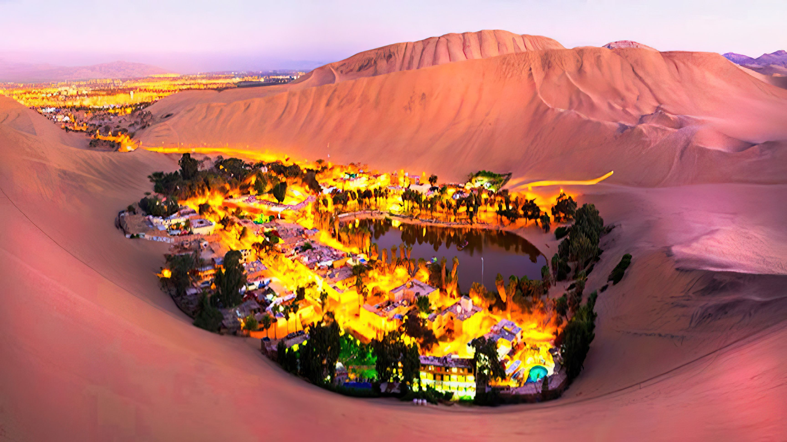
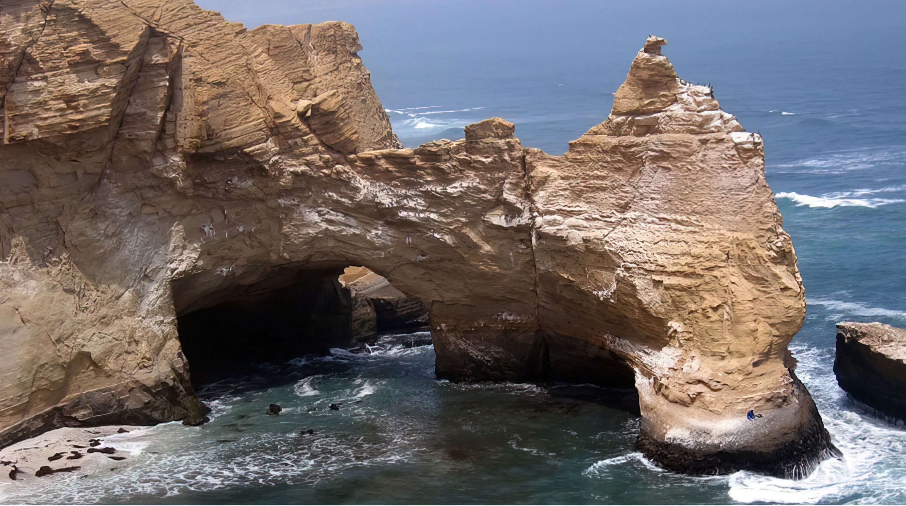
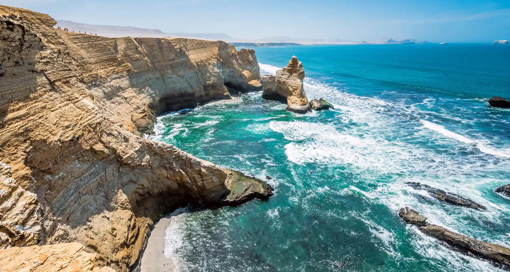
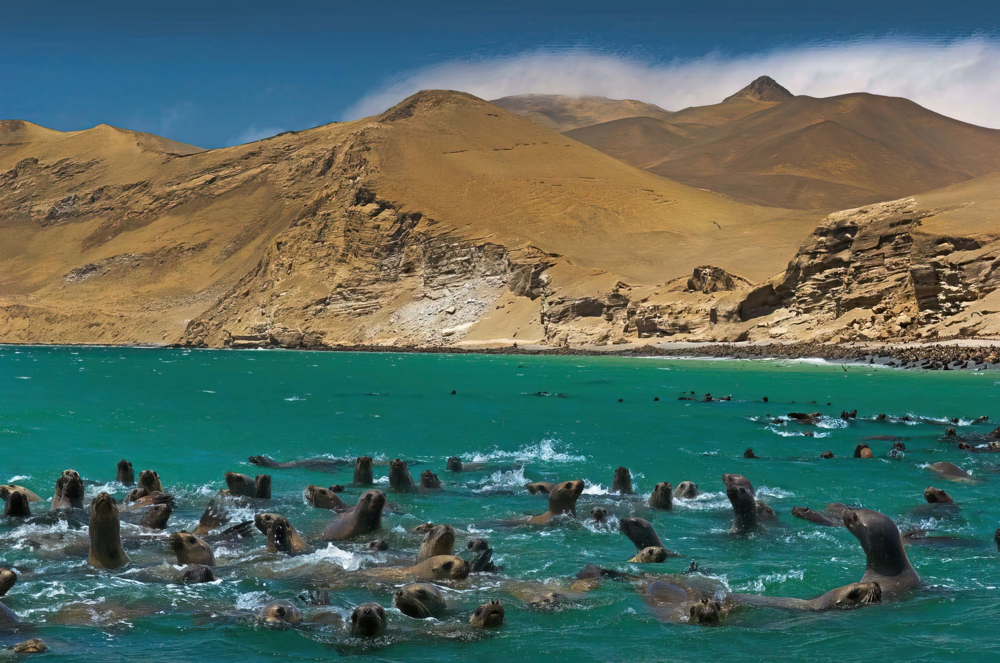

- 
- 
Disfruta de las grandes calles, playas y ciudades de la región costa
Máncora, Chiclayo, Costa Verde, Paracas y Huacachina son de los destinos turísticos disponibles de la región costera de nuestro Perú. Estos lugares son ideales para aquellas personas que quieran pasar unas vacaciones con una estancia cercana al mar peruano. Ofrecemos paquetes que se adecuan según su presupuesto y sus requisitos. Las tarifas están expresadas de soles peruanos, incluyen todos los impuestos aplicables y son válidas para turistas extranjeros y peruanos.
Descubre los tours que tenemos para ti
Viaje a Costa Verde

El Circuito de Playas de la Costa Verde, popularmente conocido como la Costa Verde, es una vía ubicada en la ciudad de Lima, capital del Perú y la ciudad del Callao, el Primer Puerto, recorriendo así la parte sur y central del litoral limeño y chalaco uniendo los distritos de La Punta, Callao, La Perla, San Miguel, Magdalena del Mar, San Isidro, Miraflores, Barranco y Chorrillos.
3 días/2 noches - 2 Personas
Visitas Guiadas
Desde S/.1150
Viaje a Huacachina
Si estas buscando recorrer el sur del Peru, y vivir las experiencias mágicas que tenemos para ti, contamos con diversos paquetes turísticos. Te animamos a ser parte de esta gran aventura! Conocerás todos los secretos y maravillas que dejaron las civilizaciones antiguas; además de destinos naturales como playas paradisíacas y el extenso desierto de grandes dunas.
4 días/3 noches - 3 Personas
Visitas Guiadas
Desde S/.1730
Viaje a Paracas
Paracas es una ciudad de la costa oeste de Perú. Es conocida por sus playas, como El Chaco, ubicada en la bahía resguardada de Paracas. La ciudad es un punto de partida hacia las islas Ballestas deshabitadas, hogar de lobos marinos, pelícanos y pingüinos de Humboldt. La escabrosa Reserva Nacional de Paracas tiene abundante fauna y se extiende por desierto, océano, islas y la península de Paracas.